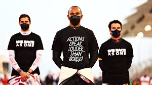
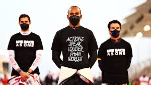
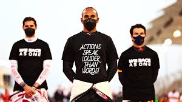
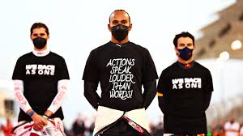

En 2024, Lewis Hamilton a réaffirmé son engagement en faveur de l'égalité raciale dans le sport automobile. Il a participé à divers événements pour sensibiliser le public et encourager la diversité dans le sport.
Lors du dernier Grand Prix, Hamilton a terminé sur le podium, démontrant une forme impressionnante. Ses performances cette saison lui permettent de rester un concurrent sérieux pour le championnat.
Hamilton a également intensifié ses efforts pour promouvoir la durabilité dans le sport automobile, en mettant l'accent sur l'importance des initiatives écologiques et en soutenant des projets de réduction des émissions.